Section 01
Learning Artefacts
This section documents my unit-by-unit journey through the Machine Learning module, with at least one artefact from each unit. Each artefact is linked to the module learning outcomes it demonstrates, which are listed on the Professional Development page.
Unit 1Introduction to Machine Learning
Unit Focus
How machine learning developed and where it is heading, the challenges and opportunities of using algorithms, and how big data, machine learning and artificial intelligence depend on each other.
Key Learning
Géron (2025) describes machine learning as programming computers to learn from data rather than follow hand-written rules, which is why it suits problems such as spam filtering, where fixed rules quickly become long and fragile. The unit introduced the three main categories of learning (supervised, unsupervised and reinforcement) and the main reasons models fail: too little data, data that does not represent the real problem, poor-quality data, irrelevant features, and models that overfit or underfit. The idea that stayed with me is that the quality and representativeness of the data matter as much as the choice of algorithm.
The unit also placed machine learning within the shift from Industry 4.0, driven by automation and efficiency, to Industry 5.0, which puts human needs, resilience and sustainability at the centre of how technology is used (Metcalf, 2024).
Activities & Contributions
Collaborative Discussion 1: Initial Post. I used Southwest Airlines' operational collapse in December 2022 to show what happens when Industry 4.0 adoption is uneven. Its legacy crew-scheduling system could not cope with the disruption caused by Winter Storm Elliott, which led to around 16,700 cancelled flights and a record US$140 million penalty (US Department of Transportation, 2023). I argued that, as Metcalf (2024) warns, optimising purely for efficiency leaves no spare capacity to absorb disruption.
“Technical debt in mission-critical information systems constitutes a strategic risk, and … resilient, human-centric system design should be a board-level priority rather than merely an IT concern.”
This post addresses LO1 through the regulatory, consumer-protection and human consequences of the failure, and LO3 through the technical risk created by an outdated system. The discussion continues in Units 2 and 3 with peer responses and a summary post.
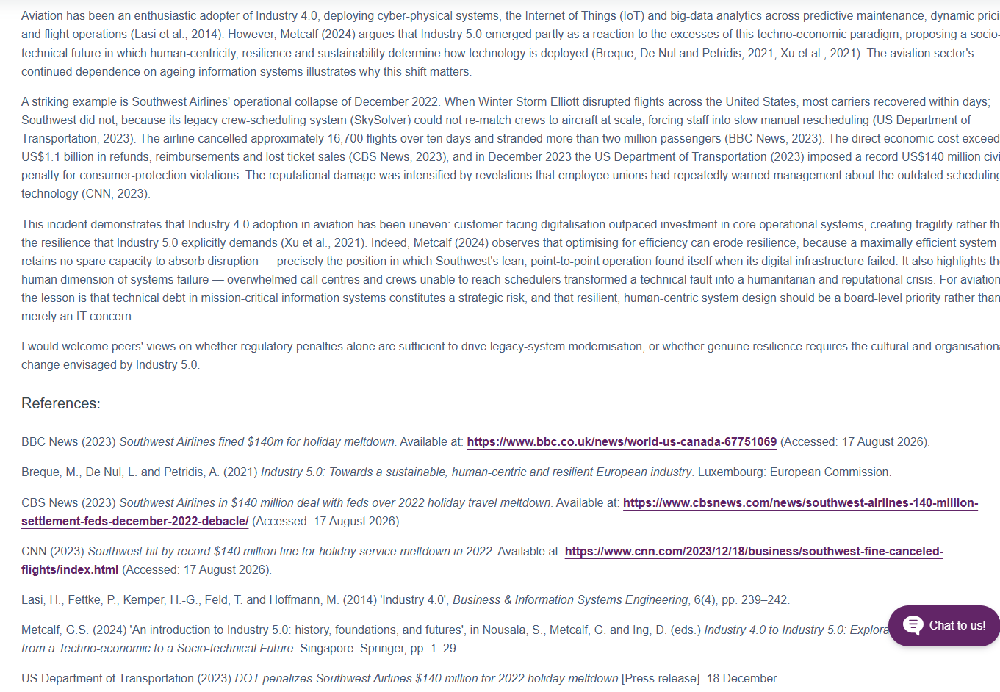
Unit 2Exploratory Data Analysis
Unit Focus
The steps of exploratory data analysis (EDA): exploring a dataset’s features, spotting anomalies and analysing it visually so that it is ready for machine learning.
Key Learning
Géron (2025) places exploring and visualising the data near the start of a machine learning project, before any model is chosen. The Auto-mpg seminar showed why. A standard missing-value check reported none, yet the horsepower column held six entries coded as ‘?’, which only appeared once the column was converted to numbers. EDA turned out to be less about drawing charts than about testing assumptions: that “no missing values” really means none, that numbers are not stored as text, and that strongly correlated features are not treated as independent.
Activities & Contributions
Seminar: EDA on the Auto-mpg dataset
I explored 398 cars from 1970–1982. After finding the hidden ‘?’ values (1.5% of rows), I filled them with the median horsepower of cars with the same number of cylinders rather than the overall mean. Weight had the strongest link with fuel economy (r = −0.83), but cylinders, displacement, horsepower and weight were correlated with each other at 0.84–0.95, so feeding all four into a model would count the same information several times. Average fuel economy rose from 17.7 mpg in 1970 to 31.7 mpg in 1982. As the brief asked, I encoded the region of origin as 1–3, but noted that these codes suggest an order that does not exist and demonstrated one-hot encoding as the safer choice.
EDA tutorial: House Prices
I ran the provided notebook and updated it for current library versions. A log transform reduced the skew of sale prices from 1.88 to 0.12. Many “missing” values, such as pool quality (99.5% empty), actually mean the house has no pool, so filling them with the most common value would invent features; a separate “None” category is more honest. I also found that newer versions of pandas read the text “None” as missing, so the same code can give different EDA results on different library versions.
Collaborative Discussion 1: Peer Responses
I replied to Vinod on the 2022 Rogers network outage, arguing for peer-reviewed changes, staged roll-outs with automatic rollback and separate networks, and for testing resilience deliberately rather than assuming it (Basiri et al., 2016). I replied to Fiaz on the WannaCry attack on the NHS, where a security patch had been available two months before the attack (National Audit Office, 2017).
“This points to a governance gap as much as a technical one: centrally enforced patching deadlines and compliance monitoring could have stopped the infection before it started.”
The peer responses address LO1 through the regulation and governance of critical systems, and LO4 by building on classmates’ cases and ending with questions for discussion. The EDA work addresses LO2.
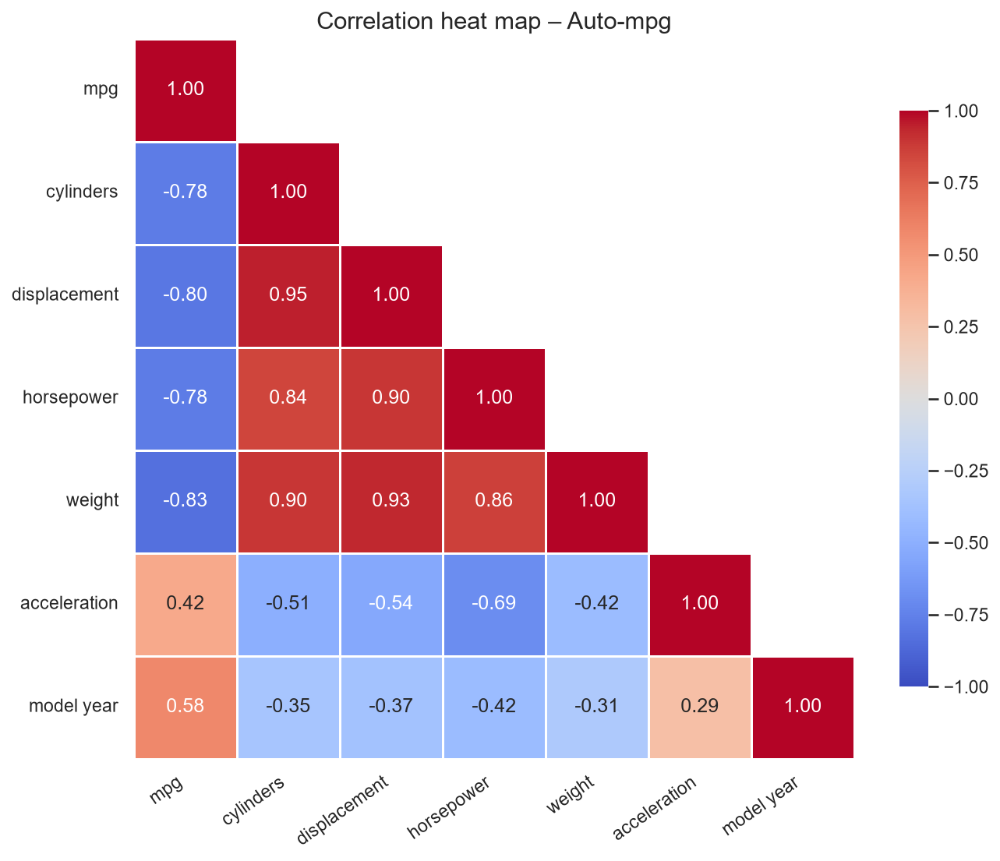
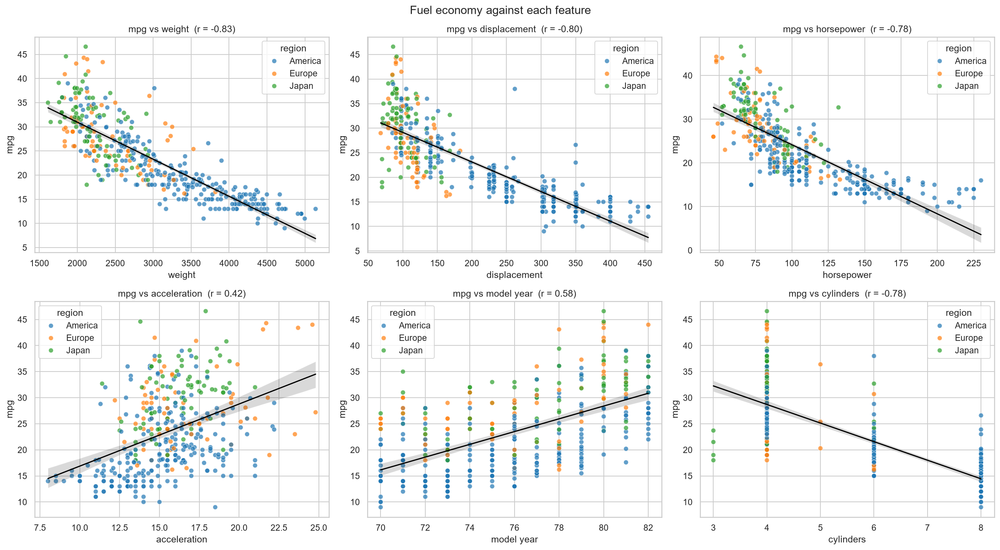
Unit 3Correlation and Regression
Unit Focus
Correlation measures how strongly two variables are related and in which direction; regression turns that relationship into an equation that can be used for prediction.
Key Learning
Running the four notebooks with my own experiments showed how fragile these numbers are. A single outlier raised Pearson’s r from 0.11 to 0.78, while a clear U-shaped relationship produced r = 0.01, because r only measures straight-line relationships. With samples of five, about one in five showed a negative correlation even though the true relationship was positive.
In polynomial regression, training R² rose with every extra degree, but the error on unseen points (leave-one-out cross-validation) was lowest at degree 3. A degree-10 model with R² = 0.99 predicted a car speed of 484 at midnight: overfitting in its plainest form (Géron, 2025).
Activities & Contributions
E-portfolio activity: correlation and regression experiments
In simple regression, one high-leverage point controlled the slope, and duplicating every record left the line unchanged but made the p-value about 370 times smaller, showing how repeated records make results look more certain than they are. In multiple regression, the notebook’s example predictions (2,300 and 3,300 kg) lay outside the data’s 790–1,746 kg range, and adding one unusual car flipped the weight coefficient from positive to negative. If a model like this were used to set emissions taxes, these weaknesses could produce unfair figures.
Collaborative Discussion 1: Summary Post
Comparing my Southwest Airlines case with my peers’ cases (the Rogers outage, WannaCry and NotPetya), I concluded that the remedies were organisational rather than technological.
“Notably, none of this is technologically novel; they are organisational and governance choices, supporting Metcalf’s (2024) argument that the harms of technology stem from human decisions about design and implementation rather than the technology itself.”
Peer response to Dzemal
On the NotPetya attack on Maersk, I argued for supply-chain risk management, enforced patching, network segmentation and deliberately tested offline backups, noting that Maersk recovered only because one domain controller happened to be offline (Greenberg, 2018).
Feedback received
Three peers responded to my initial post. All agreed that penalties alone would not drive modernisation, and they added measures such as failover scheduling systems, stress testing and benchmarking against other airlines. Their feedback is summarised on the Professional Development page.
The experiments address LO2 and LO3 (outliers, leverage, small samples, extrapolation and overfitting); the discussion posts address LO1 and LO4.
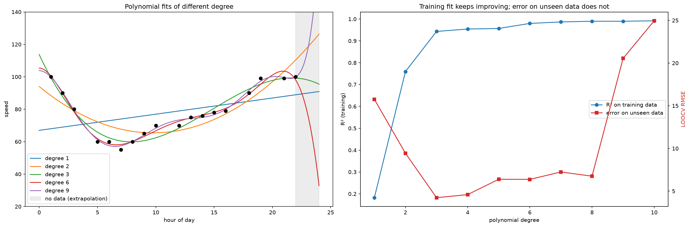
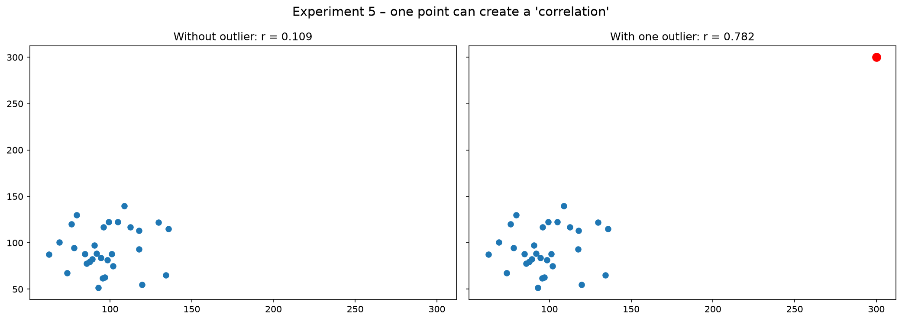
Unit 4Linear Regression with Scikit-Learn
Unit Focus
Using Scikit-Learn to model linear relationships, building multivariate linear regression models, and evaluating how well a model performs.
Key Learning
Géron (2025) describes training a linear regression model as finding the parameters that minimise its prediction error, and this unit showed that evaluating a model matters as much as fitting it. In the fuel consumption demo, the provided code first reported an R² of −18.82. Tracing this revealed two bugs: predictions were made from the wrong data, and the arguments to the R² function were reversed. After fixing them and fixing the random seed for reproducibility, the models performed as follows on test data:
| Predictors of CO₂ emissions | Mean absolute error | Test R² |
|---|---|---|
| Engine size | 22.6 | 0.78 |
| Combined fuel consumption | 20.4 | 0.80 |
| Engine size, cylinders and fuel consumption | 16.0 | 0.87 |
Activities & Contributions
Seminar Tasks A–B: population vs GDP per capita
Using World Bank data for 2001–2021, I removed 49 regional aggregates, calculated GDP per capita from total GDP and population (the GDP file held totals and ended in 2020), and kept countries with at least half of the years available, leaving 208. Population and GDP per capita were essentially unrelated: Pearson’s r was −0.067 (p = 0.34) and the regression R² was 0.0045. On a held-out test set the model did no better than simply predicting the average. Because the scatter plot was L-shaped, I also used a log scale and Spearman’s rank correlation, which showed only a weak negative link (about −0.3), driven by wealthy micro-states. Population alone is not a useful predictor of a country’s income per person.
The missing data was not random: it mostly affected small territories and countries in conflict, such as Somalia and South Sudan. Dropping them leaves out exactly the countries a global analysis should not ignore, so this limitation needs to be reported openly (LO1, LO2).
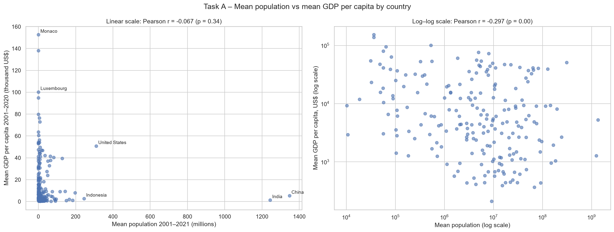
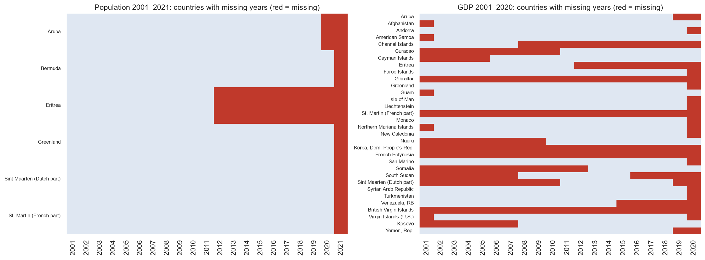
Unit 5Clustering
Unit Focus
The logic of clustering, different ways of measuring distance and similarity, k-means and hierarchical clustering, and how to evaluate the clusters they produce.
Key Learning
Clustering always returns groups, so the real skill is judging whether they mean anything. Reproducing the unit’s k-means animations in code made this concrete: on uniformly scattered points with no structure at all, k-means still produced four tidy clusters. The silhouette score and the sum of squared errors help to tell real structure from imposed structure (Thinsungnoen et al., 2015): data with four genuine groups reached a silhouette of 0.56 at k = 4, while the uniform points never exceeded 0.42.
Activities & Contributions
E-portfolio activity: Jaccard coefficient
For three patients’ symptoms and test results, I calculated Jaccard distances of 0.33 (Jack–Mary), 0.67 (Jack–Jim) and 0.75 (Jim–Mary), excluding gender and treating ‘A’ as absent, following Han, Kamber and Pei (2012). Because the task never defines ‘A’, I also tested reading it as “abnormal”, which made Jack and Jim the most similar pair instead. Unlike simple matching, the Jaccard coefficient ignores shared negatives, which suits medical findings where most results are negative.
Health data is special-category personal data under UK GDPR, and a similarity score is not a diagnosis, so encoding choices like these need to be documented (LO1).
K-means step by step
I implemented k-means from scratch and checked it against scikit-learn. With four groups and one outlier, two of five starting positions failed to find the groups, and in one of them the outlier captured a whole centroid. Repeating each strategy 200 times, a single random start found the true groups 82% of the time, a single k-means++ start 97% (Arthur and Vassilvitskii, 2007), and the best of ten starts 100%.
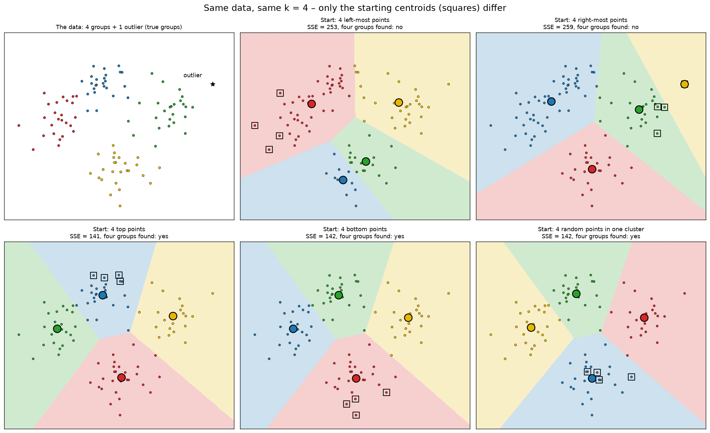
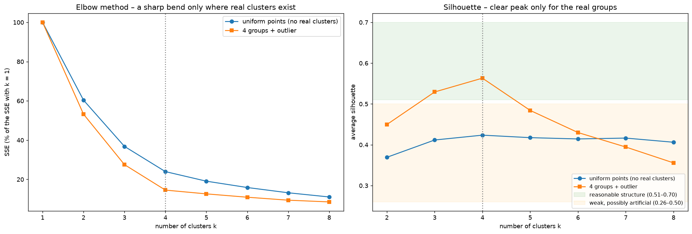
Unit 6Clustering with Python
Unit Focus
Applying k-means clustering to real datasets with Python’s scikit-learn library, and evaluating and interpreting the results.
Key Learning
Working with real datasets showed that preprocessing decisions shape a clustering result as much as the algorithm does. On the Wine data (Aeberhard and Forina, 1992), standardising the features raised the match between clusters and the real grape varieties from 70.2% to 96.6%, because one feature, proline (ranging from 278 to 1,680), otherwise dominated the distances. On Iris (Fisher, 1936), the elbow pointed to three clusters but the silhouette score preferred two, while domain knowledge says there are three species: the metrics alone would have given the wrong answer.
Activities & Contributions
Seminar Tasks A–C: Iris, Wine and Australian weather
The brief asked for at least one task; I completed all three, removing the label columns before clustering and using them only to check the results. On 120,381 days of Australian weather there were no natural clusters (silhouette 0.23), yet k = 3 produced a useful “wet, windy, low-pressure” group in which rain followed the next day 47% of the time, against 22% overall.
K-means demo: customer segmentation
Reviewing the provided notebook, I found that it standardised the data but then fitted the model on the unscaled version, so income, with a spread 42 times larger than education’s, decided the segments. It also silently set 150 unknown loan-default values (18%) to zero. Correcting the scaling lowered the silhouette from 0.56 to 0.29 but produced segments that reflected more than income: a higher silhouette is not a better segmentation.
Credit-default data is personal financial data under UK GDPR, so preprocessing choices like these must be documented and justified before segments are used for decisions about real people (LO1).
Link to the team project
These tasks connected directly to the tutor’s feedback on our team project, which described our four Airbnb segments as “relatively descriptive”. They showed me that a segment should be presented with evidence that it is stable and meaningful. The team project itself is documented on the Team Project page.
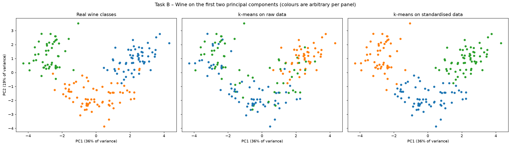
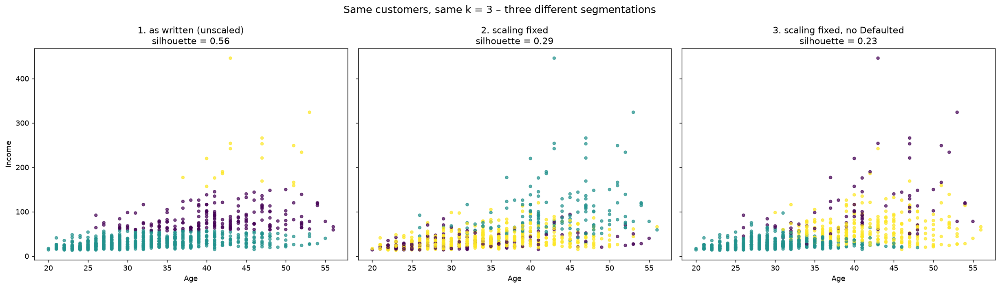
Unit 7Introduction to Artificial Neural Networks
Unit Focus
How artificial neurons mirror biological ones, the algorithm behind artificial neural networks (ANNs), and the activation functions they use.
Key Learning
Rosenblatt’s (1958) perceptron adds up weighted inputs and fires when the total passes a threshold, so a single perceptron can only separate classes that a straight line can divide. That is why it cannot learn XOR (Minsky and Papert, 1969). Adding a hidden layer, trained by backpropagation (Rumelhart, Hinton and Williams, 1986), solves the problem, because each hidden neuron draws its own line and the output neuron combines them. The shape of the data therefore decides which model can work at all.
Activities & Contributions
E-portfolio activity: three perceptron notebooks
Simple perceptron. Varying the weights and inputs showed that large inputs make almost any positive weights fire, which is why inputs are usually scaled before training.
AND operator. The provided training rule uses the absolute error and no bias, so the weights can only increase. It learned AND and OR but never NAND or XOR. With the standard rule (signed error plus a bias) it learned NAND in 13 epochs, while XOR still failed. I also added a maximum number of epochs, since the original loop would run forever on a gate it cannot learn.
Multi-layer perceptron. The provided notebook only ran in its author’s session because of an undefined variable. After fixing it and setting a random seed, my network classified all four XOR inputs correctly. I noted that the notebook’s “accuracy” (1 minus the mean error) is not true accuracy. Over ten random starts, the number of hidden neurons made a clear difference, and one run with three neurons got stuck in a local minimum:
| Hidden neurons | 1 | 2 | 3 | 5 | 10 |
|---|---|---|---|---|---|
| Runs that solved XOR (of 10) | 0 | 3 | 9 | 10 | 10 |
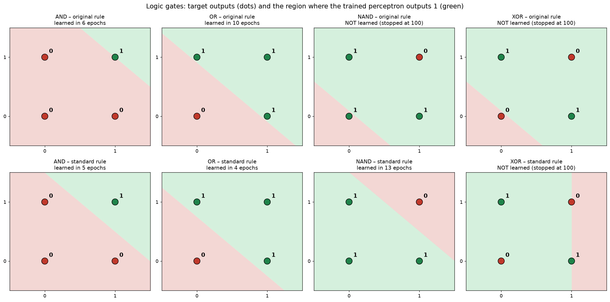
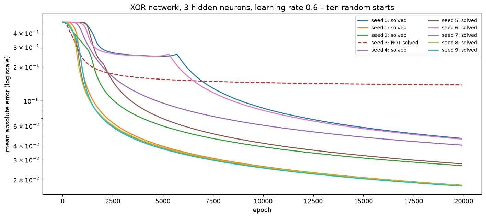
Unit 8Unit title
Unit Focus
The unit topic and its learning outcomes.
Key Learning
The main concepts from this unit, in my own words.
Activities & Contributions
Wiki posts, e-portfolio activities, discussion posts and exercises completed in this unit.
Evidence screenshots and files.
Unit 9Unit title
Unit Focus
The unit topic and its learning outcomes.
Key Learning
The main concepts from this unit, in my own words.
Activities & Contributions
Wiki posts, e-portfolio activities, discussion posts and exercises completed in this unit.
Evidence screenshots and files.
Unit 10Unit title
Unit Focus
The unit topic and its learning outcomes.
Key Learning
The main concepts from this unit, in my own words.
Activities & Contributions
Wiki posts, e-portfolio activities, discussion posts and exercises completed in this unit.
Evidence screenshots and files.
Unit 11Unit title
Unit Focus
The unit topic and its learning outcomes.
Key Learning
The main concepts from this unit, in my own words.
Activities & Contributions
Wiki posts, e-portfolio activities, discussion posts and exercises completed in this unit.
The Unit 11 individual project is documented on the Individual Project page.
Evidence screenshots and files.
Unit 12Unit title
Unit Focus
The unit topic and its learning outcomes.
Key Learning
The main concepts from this unit, in my own words.
Activities & Contributions
Wiki posts, e-portfolio activities, discussion posts and exercises completed in this unit.
Evidence screenshots and files.